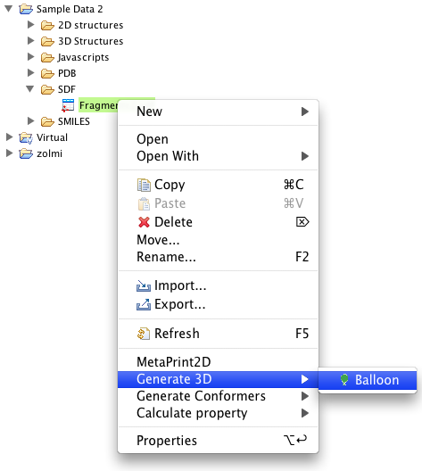

Balloon in Bioclipse

To use Balloon, simply right-click on a MDL Molfile, a CML file, or an SDFile in
the Bioclipse Navigator and choose one of the options:
- Generate 3D coordinates > Balloon
- Generate 3D conformations > Balloon
Balloon will output a new file with the 3D coordinates. If Generate 3D Conformations are chosen,
an SDFile will be outputted. The number of selected conformations that is
entered in the dialog is a target, and balloon will return a maximum of this target,
but might return less than this number.
Currently, invoking Balloon on a file in the Virtual
project does not work.